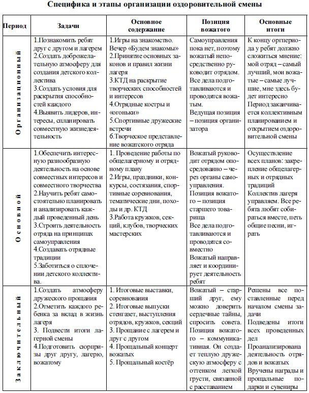

ЛОГИКА РАЗВИТИЯ ЛАГЕРНОЙ СМЕНЫ
Логика лагерной смены определилась давно и достаточно четко выражается в этапах:
- Организационный: (Знакомство детей с педагогами и друг с другом. Знакомство с жизнедеятельностью лагеря. Определение структуры коллектива, формирование основ коллективной деятельности. Адаптация).
- Основной: (Включение детей в активную деятельность; Создание благоприятных условий для самореализации детей).
- Заключительный: (Подведение общих итогов реализации программы смены. Выявление результатов индивидуальных и коллективных достижений. Награждение организаторов и активных участников смены).
В первый период вожатому вместе с напарником необходимо (за 3-4 дня) заложить основы успешной работы и жизни своего отряда в течение смены: создать ситуации для быстрого знакомства членов отряда (визитки с именами, специальные игры-знакомства и т.п.); провести разведку интересных дел и вместе с ребятами составить план работы, определиться с характером самоуправления (соуправления) в отряде или наметить как при необходимости будут решаться коллективные дела, узнать детей и постараться найти среди них помощников, обеспечить психологическую поддержку воспитанникам в довольно сложный для них адаптационный период. Именно эти дни - первый психологический кризис смены: для основной части ребят привыкать надо ко всему: новому человеческому и предметному окружению, отсутствию родителей, самообслуживанию, режиму, новым требованиям.
В середине смены (примерно на 12-14 день) наступает второй кризисный пик, который может повлечь немотивированные ссоры в отряде, напряженность отношений с вожатыми и другими взрослыми, обострение тоски по дому. Ребята уже привыкли к лагерю и в то же время устали или от скуки и монотонности жизни, или от ее перенасыщенности. Именно к середине смены надо заложить в план возможность появления какого-то сюрпризного, неожиданного дела или события, или запланировать на эти дни поход, который сломает весь привычный уклад.
За 2-3 дня до конца смены начинается итоговый заключительный этап с еще одним конфликтным кризисным пиком (особенно если смена была 30-40 дней). Ребята устали от постоянного нахождения на людях, от дел, экскурсий, они снова вспомнили про дом. И на этот момент надо запланировать какие-то интересные беседы, сюрпризы и подготовиться к интересному и запоминающемуся расставанию. И конечно, успех всех мероприятий во многом зависит от участия самих ребят в жизни лагеря. Поэтому для вожатого очень важно найти для каждого ребенка то дело, которое ему интересно и вызовет ответную положительную реакцию. В течение всей лагерной смены возможно использование самых разнообразных форм работы. Перечислим некоторые из них:
- Познавательные: турниры смекалистых, книжная лавка, вечер легенд, викторины, час вопросов и ответов, турнир эрудитов (интеллектуалов типа «Что? Где? Когда?»), базар головоломок, КВНы смешанные и тематические, журнал «Хочу все знать», познавательные экскурсии, разнообразные кружки, вечер разгаданных и неразгаданных тайн, клуб «Почемучек», День книги, «Герои любимых книг» и т.д.
- Трудовые: самообслуживание, трудовые подряды в сельском хозяйстве, лесничествах и водных хозяйствах; защита профессий, защита фантастических проектов, мастерские, города волшебников, умельцев, трудовые десанты, дежурство, дни профессий, экскурсии на предприятия, в хозяйства, в гостях у Самоделкина, кружки, «Король Мусор и Мы» и т.д.
- Нравственного направления: экскурсии и шествия к памятникам, местам славы и исторической памяти, диспуты, огоньки (знакомства, «Расскажи мне обо мне», «Расскажи мне о себе», «Откровенный разговор», «Давай обсудим»), беседы, обучение общению: психотренинги, психоигры и упражнения; телефон доверия, день именинника и т.д.
I. Организационный период
Место в общей логике - первые 1-3 дня: от заезда до организационного оформления отряда и открытия смены.
Краткий девиз: «Удивление! Темп! Разнообразие!»
Задачи:
- Познакомить ребят друг с другом, с лагерем, традициями.
- Создать условия для раскрытия способностей каждого.
- Создать доброжелательную, радостную атмосферу: заложить основы будущего коллектива.
- Влюбить детей в себя, друг в друга, в свой отряд.
- Выявить лидеров, интересы; спланировать совместную жизнедеятельность.
Основное содержание: игры на знакомство; костры и «огоньки»; спортивные дружеские встречи; КТД на раскрытие творческих способностей и интересов; творческое представление вожатского отряда.
Основные итоги: к концу оргпериода у ребят должно сложиться мнение: мой отряд — самый лучший, мои вожатые — самые лучшие, мне будет интересно. Оргпериод заканчивается оргсбором, коллективным планированием, открытием лагерной смены.
Позиция вожатого: cамоуправления пока нет, поэтому вожатый руководит отрядом. Он — и старший товарищ, и командир, и воспитатель одновременно. Все дела проводятся вожатым. Ведущая позиция — позиция организатора.
II. Основной период
Место в общей логике - между организационным и заключительными периодами.
Краткий девиз: «Творчество! Самостоятельность! Мажор! Дружба!»
Задачи:
- Обеспечить интересную разнообразную деятельность на основе совместных интересов и совместного творчества.
- Научить ребят самостоятельно планировать и анализировать каждый свой день, строить свою деятельность на принципах самоуправления.
- Создавать и укреплять внутриотрядные традиции.
- Заботиться о сплочении детского коллектива.
Основное содержание: работать по плану дружины, отряда; игры, праздники, состязания, тематические дни, костры, походы; работа кружков, клубов, секций, творческих мастерских.
Основные итоги: к концу основного периода дети начинают жить по общелагерным и отрядным традициям. Весь коллектив лагеря управляем, любит собираться вместе, петь общие песни, играть.
Позиция вожатого: вожатый руководит отрядом через органы самоуправления. Его позиция - позиция старшего товарища, все дела готовятся и проводятся совместно с ребятами - и чем дальше, тем чаще самими ребятами - при направляющей и координирующей роли вожатого.
III. Заключительный период
Место в общей логике - последние 2-4 дня перед отъездом.
Краткий девиз: «Теплота! Доверительность! Светлая грусть!»
Задачи:
- Создать атмосферу дружеского прощания.
- Найти добрые слова и отметить каждого за вклад в жизнь отряда.
- Подвести итоги смены.
- Подготовить прощальные сюрпризы друг другу, лагерю, вожатым.
Основное содержание: итоговые выставки, встречи, соревнования; итоговые газеты, выступления отрядов, кружков, секций; прощание друг с другом и с лагерем; прощальный концерт вожатых.
Основные итоги: к концу итогового периода решены все задачи, подведены итоги всех проведённых дел, проанализирована деятельность отрядов вожатых, вручены награды и прощальные сувениры.
Позиция вожатого: вожатый - старший друг, которому можно доверить сердечные тайны, спросить совета и т.д. Его позиция - коммуникативная. Она сродни «дирижёру», создающему тёплую дружескую атмосферу с оттенком лёгкой грусти, связанной с расставанием.
IV. Разъезд, педагогический анализ смены
Место в общей логике - подведение итогов работы за смену, последействие.
Краткий девиз: «Каждая педситуация - ступень для дальнейшего развития и самосовершенствования»
Основное содержание: педагогическая рефлексия - что получилось и благодаря чему?, что не удалось и почему?, что можно учесть на будущее, что сделать лучше и как?, в чем я вырос как вожатый-педагог?, осмысление и планирование последействия на следующую смену.
 Назад к списку